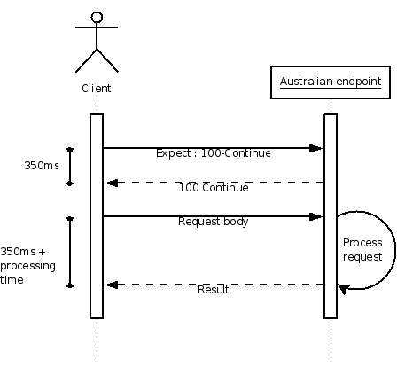
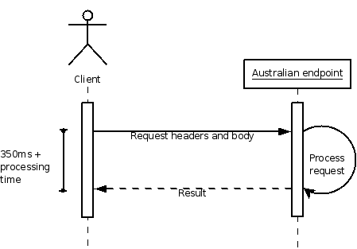
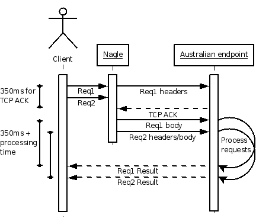
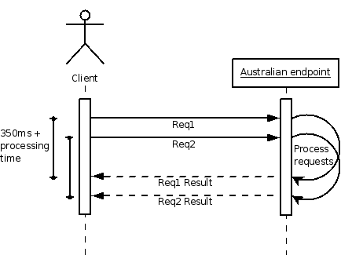

Since the first version of .Net and its associated toolset, Microsoft have sought to make it easy to write SOAP services and SOAP clients. And, generally, they have succeeded quite well. Whilst the open-source world has tended to prefer the simpler REST approach, MS (and Sun, and Apache) have done an admirable job of taking the large, complex SOAP protocol and making it reasonably straightforward to work with most of the time.
One of the areas in which things get somewhat less straightforward is high performance. Granted, most web services don't have particularly eye-popping requirements in terms of hits or transactions, but occasionally you find an exception. Betfair, for instance, have an API that has peak rates in excess of 13,000 requests per second, many of which hit the database, with individual users making tens or even hundreds of requests per second. Betfair's data changes at a breathtaking rate and there is a perceived advantage to getting hold of up-to- the-millisecond information.
To put that in context, the Digg Effect is estimated to peak at around 6K-8K hits per hour as I write in December 2007, which translates to a piffling couple of hits per second (8000 / 60 / 60 = 2.2). Even a more extreme prediction of 50K hits per hour is only around 14 hits per second, so we're talking about handling three orders of magnitude more requests than Digg generates.
If you are writing a .Net client and want to get the best out of this sort of situation, you are hamstrung unless you learn a few tricks. Read on to learn five of the best. I'll be using the Betfair API as an example throughout, but the techniques apply to any high-performance web service where the usage profile involves frequent small (<1KB) SOAP requests.
For those who normally turn to the back of the book for answers and don't really care about the whys and wherefores, here's the executive summary:
-
Switch off Expect 100 Continue. This should be done in your App.config file (see below).
-
Switch off Nagle's Algorithm. This should be done in your App.config file (see below).
-
Use multithreading. Unfortunately this is not a simple configuration file setting, it is a fundamental part of your application design.
-
Remove the maximum connection bottleneck. This should be done in your App.config file (see below). This is vital if your application is multithreaded.
-
Use gzip compression. .Net 2 has this built-in if you switch it on; .Net 1.1 needs a helping hand.
The XML snippet that configures these settings is shown below, and should be added to your App.config file:
<system.net>
<connectionManagement>
<add address="*" maxconnection="20" />
</connectionManagement>
<settings>
<servicePointManager expect100Continue="false"/>
<servicePointManager useNagleAlgorithm="false"/>
</settings>
</system.net>
For those who share my distrust of unexplained sorcery, here's the gory details.
Expect-100 the Unexpected
RFC 2616 (the specification for HTTP 1.1) includes a request header and response code that together are known as 'Expect 100 Continue'. When using the Expect header, the client will send the request headers and wait for the server to respond with a response code of 100 before sending the request body, i.e. splitting the request into two parts with a whole round-trip in- between.
Why would you ever want to do this? Well, imagine you are trying to upload a 101MB file to a web server with a 100MB file size limit. If you just submit the whole thing as one request, you'll sit there for ages waiting for the upload to complete, only to have it fail right at the last minute when you hit the 100MB limit. Using Expect 100 Continue, you submit just the headers initially, and wait for the server's permission to continue; in our example, this gives the server a chance to look at the Content-Length parameter and identify that your file is too big, and return an error code instead of permission to continue. This way you know the upload will fail, without needlessly transmitting a single byte of the large file.
By default, the .Net Framework uses the Expect 100 Continue approach. Most SOAP requests are not, however, anywhere near 101MB in size, and a server designed to deal with thousands of requests per second is not likely to be returning anything other than 100 Continue if the Expect header is sent. Depending on latency, the round-trip penalty may be unacceptable.
For example, Betfair's Australian exchange (physically located in Australia) contains all their Australian markets, so if you're in the UK and want to trade on the Australian Open tennis you're subject to a round-trip time of about 350ms. If you allow your requests to be split into two, then you have two round-trips, so your request will take 700ms plus processing time.

You don't want that, so switch it off. Note that the request headers and body are still sent separately, but the latter is no longer dependent on the response to the former (so they are shown as sent together in this diagram).

The setting corresponding to this in the XML snippet above is:
<servicePointManager expect100Continue="false"/>
Nagle's Algorithm
Nagle's algorithm is a low-level algorithm that tries to minimise the number of TCP packets on the network, by trying to fill a TCP packet before sending it. TCP packets have a 40-byte header, so if you try to send a single byte you incur a lot of overhead as you are sending 41 bytes to represent 1 byte of information. This 4000% overhead causes chaos on congested networks. A TCP packet size is configurable, but is often set to 1500 bytes, and so Nagle's algorithm will buffer outgoing data in an attempt to send a small number of full packets rather than a huge amount of mostly empty packets.
Nagle's algorithm can be paraphrased in English like this:
If I have less than a full packet's worth of data, and I have not yet received an acknowledgement from the server for the last data I sent, I will buffer new outbound data. When I get a server acknowledgement or have enough data to fill a whole packet, I will send the data across the network.
Now, with our use case (frequent SOAP requests, each <1KB) a request doesn't fill a packet, so requests are subject to buffering. Furthermore, as explained above, even with Expect 100 Continue switched off the request headers are still sent separately from the request body, so the body of the first request is buffered until the request headers reach their destination and the server sends back a TCP ACK.
Let us again consider a UK client communicating with Betfair's Australian API. Your application issues two requests one for current prices and one for your current market position (Req1 and Req2 in the diagram below). Together, both these requests are less than 1500 bytes. The headers for the first request are transmitted, but Nagle's algorithm buffers the request body, plus the whole second request, since they don't fill a TCP packet.
Due to the round trip latency, the acknowledgment of the first request's headers is not received for 350ms, so that is how long the requests are buffered for. When the requests do get sent, they too are subject to 350ms latency around the world, so again you end up with around 700ms added to each of your Australian API calls.

Without Nagle, we dispense with the buffering and send out our smaller packets immediately, saving a round-trip.

One word of warning - disabling Nagle can cause problems if you are on a highly-congested network or have overworked routers and switches, since it increases the number of network packets flying around. If you don't own your network, or are deploying your web service client to a large number of users, you might want to think about this carefully as you won't be popular if your software saturates the network. The setting corresponding to this in the XML snippet above is:
<servicePointManager useNagleAlgorithm="false"/>
Happenin' Threads
This one should be pretty obvious. A single-threaded application can only do one thing at a time. A multi-threaded application can do multiple things at a time. So if, for example, you want to display some information and need to collate the results from four web service requests to build your view, calling them one after another is going to be slower than calling them all simultaneously (not to mention freezing your UI if you're writing a WinForms application and making calls on the UI thread).
Explaining how to design and write multi-threaded .Net applications is way out of scope for this blog post, but any time you spend reading and learning about it either online or in books is going to be time well-spent. Go on, do it now. Also read the next section, otherwise your application will not get as much benefit as you expect.
Walk and Chew Gum
.Net, by default, has a bottleneck on simultaneous web service calls against the same host. This one catches loads of people out - they write clever multi-threaded applications that issue many, many requests, and never realise that beneath the application layer a lot of their requests are called in sequence rather than in parallel.
Tsk, damn Microsoft for unnecessarily crippling their framework, right? Well no, actually, since this is an example of Microsoft following standards and recommendations and is to be applauded, lest they go back to their old ways of "embrace and extend". The recommendation in question is from RFC 2616 again, and states:
A single-user client SHOULD NOT maintain more than 2 connections with any server or proxy.
(RFC 2616, section 8.1.4)
.Net uses HTTP 1.1 persistent connections by default (this is a good thing - you don't want to incur the cost of establishing a TCP connection with every request,especially if you have long round-trip times as well since it involves multiple round-trips), so MS have done the right thing and restricted processes to two simultaneous connections by default.
What does this mean for your application? It means that if you want to make 20 requests, and do so on 20 threads as recommended above, under the hood .Net only makes two at a time and queues the rest up. Therefore your 20 threads are wasted, as your throughput is no better than if you'd only created two threads, and innocent web servers are protected from overzealous clients.
When we know that we're talking to an insane city-flattening Godzilla-on-steroids of a server, however, the two-connection limit is unreasonable and we can ramp-up safely. The corresponding setting in the XML snippet above is:
<connectionManagement>
<add address="*" maxconnection="20" />
</connectionManagement>
Sorted. You can, of course, change the number 20 to whatever is appropriate for your application.
Warning: Do not, under any circumstances, get into the habit of configuring this for all your web service applications. With all 20 threads issuing one request per second, you are exceeding the 14-request-per-second Digg Effect example I used above; with this technique and enough bandwidth your application will be quite capable of taking a lot of websites down, and those that manage to weather the storm will probably blacklist your IP address and/or close your account. Only use this if you are absolutely sure the server is up to it and such aggressive behaviour is permitted by the owners.
Small is Beautiful
The last step is to enable compression on your responses. Depending on the nature of the service you are using, the value of this tip may vary, but it's likely to be of some benefit given the number of requests per second we are issuing. Of course, it is dependent on the web service actually supporting compression, but it's been a standard feature of just about every web server for years, so this shouldn't be a problem.
Lets look at a worked example. The getMarketPrices response from the Betfair API is about 30KB of XML. If, as above, we have 20 threads issuing one request per second, and each thread is interested in prices from a different market, that's about 600KB of data per second, which will quite easily saturate a lot of home broadband connections.
With gzip compression, however, each response comes down to about 5KB (XML compresses very well, generally, since it is just text with a lot of repetition and whitespace), so the 20 threads now demand a more manageable 100KB per second.
Great. So how do we use it? In .Net 2.0 and above it's very easy - just set the EnableDecompression property of your web service proxy object (ignore IntelliSense, which incorrectly claims the value is true by default; it's actually false by default, as stated on MSDN. For example, to get compressed responses from Betfair's global server:
BFGlobalService service = new BFGlobalService();service.EnableDecompression = true;
If you're still using .Net 1.1, you have a bit more work to do, since support for gzip was inexplicably left out of the framework. First, you need to subclass the generated BFGlobalService proxy class, and override some key methods so you can a) include the Accept-Encoding header to tell the server that you understand gzip, and b) decompress the gzipped response before the XML deserializer sees it, otherwise it'll choke.
public class BFGlobalWithGzip : BFGlobalService
{
/// <summary>
/// Adds compression header to request header
/// </summary>
protected override System.Net.WebRequest GetWebRequest(Uri uri)
{
HttpWebRequest request = (HttpWebRequest)base.GetWebRequest(uri); // Turn on compression
request.Headers.Add("Accept-Encoding", "gzip, deflate");
return request;
}
/// <summary>
/// Decompress response before the Xml serializer gets
/// its hands on it
/// </summary>
protected override WebResponse GetWebResponse( WebRequest request)
{
return new HttpWebResponseDecompressed(request);
}
/// <summary>
/// Need to override this method if performing
/// asynchronous calls, otherwise de-compression
/// will not be performed and will throw an error
/// </summary>
protected override WebResponse GetWebResponse(WebRequest request, IAsyncResult result)
{
return new HttpWebResponseDecompressed(request, result);
}
}
Next, implement the HttpWebResponseDecompressed class. This subclasses .Net's WebResponse class and knows how to decompress a response if it has ContentEncoding 'gzip':
public class HttpWebResponseDecompressed : WebResponse
{
private HttpWebResponse m_response;
private MemoryStream m_decompressedStream;
public HttpWebResponseDecompressed(WebRequest request)
{
m_response = (HttpWebResponse)request.GetResponse();
}
public HttpWebResponseDecompressed(WebRequest request,
IAsyncResult result)
{
m_response = (HttpWebResponse)
request.EndGetResponse(result);
}
public override long ContentLength
{
get
{
if (m_decompressedStream == null
|| m_decompressedStream.Length == 0)
return m_response.ContentLength;
else return m_decompressedStream.Length;
}
set { m_response.ContentLength = value; }
}
public override string ContentType
{
get { return m_response.ContentType; }
set { m_response.ContentType = value; }
}
public override Uri ResponseUri
{
get { return m_response.ResponseUri; }
}
public override WebHeaderCollection Headers
{
get { return m_response.Headers; }
}
public override System.IO.Stream GetResponseStream()
{
Stream compressedStream = null;
if (m_response.ContentEncoding == "gzip")
compressedStream = new GZipInputStream(
m_response.GetResponseStream());
else if (m_response.ContentEncoding == "deflate")
compressedStream = new InflaterInputStream(
m_response.GetResponseStream());
if (compressedStream != null)
{
m_decompressedStream = new MemoryStream();
int size = 4096;
byte[] buffer = new byte[size];
while (true)
{
size = compressedStream.Read(
buffer, 0, size);
if (size > 0)
m_decompressedStream.Write(
buffer, 0, size);
else
break;
}
m_decompressedStream.Seek(0, SeekOrigin.Begin);
compressedStream.Close();
return m_decompressedStream;
}
else return m_response.GetResponseStream();
}
}
To decompress the data, we need a decompression library since .Net 1.1 doesn't provide one. In most cases, SharpZipLib will do the business:
using ICSharpCode.SharpZipLib.GZip;
using ICSharpCode.SharpZipLib.Zip.Compression.Streams;
Now, when creating an instance of BFGlobalService you can use the gzip-supporting subclass and everything else happens automatically.
BFGlobalService service = new BFGlobalServiceWithGzip();
Fin
Jebus, that went on for a bit. Now, go forth and write high-performance clients at will - but heed the warnings about only doing this when you know the server is on-the-ball, because these tips really can cause havoc if used irresponsibly.
Hi,
Excellent tips. Thank you for this.
I wonder why Web Services are selected to implemented such a high performance solution. Twitter has the same problem with the REST based API and thus they provide an XMPP backend for high polling applications.
Joann.
Hi Joann, thanks for the comment. Hope the tips come in useful!
It is an interesting point about the use of web services for such a high performance application. However, I happen to know that XML serialisation/deserialisation is the largest bottleneck in the system from Betfair's perspective, so I'm not sure XMPP would help much.
For pure performance, a custom binary protocol would be superior, but then you have the additional burden of writing and maintaining the protocol, and can run into all sorts of interesting problems with byte ordering and encoding across different platforms and processor architectures. Interoperability is the trump card here.
Everything works great except when the web service throws an Exception the client receives "The remote server returned an error: (500) Internal Server Error." With decompression turned off the client receives our normal customized application exceptions and we can trap them appropriately. Is there something else we need to implement when overriding WebResponse so the client receives our custom exceptions? The 500 error is thrown at request.GetResponse() in the HttpWebResponseDecompressed constructor.
Great article btw.
Hello,
A very informative, and enjoyable read, and although I understand the articles aims, I cannot figure where to actually put the code that ups the maxconnection, I have tried pasting the following code into an app.config file as per your instructions with no luck. is there anything else i need to do?
Easy and simple information to follow. Great share, thanks
Hmmm, looks like tags in the xml request haven't posted correctly (not surprisingly), but please take my work for it that the body of the request and the response is not encoded.
Cheers, Glyn.
its seems that in .NET 3.5 the lines:
dont work, since there is no EnableDecompression Property anymore. Im using the VS2008.
What would be the proper way todo this in .NET 3.5
Glyn,
I'm actually not sure what's going on there - the same thing is now happening to me, but I can't figure out why. I think it's something at Betfair's end - if I use the little python lib I cooked up, and switch on detailed tracing, I see this (headers only):
So Betfair's servers definitely have compression switched on. It looks like it's doing something weird with the headers (the jumbled ntCoent-Length header contains the uncompressed size of the response), but the data is undoubtedly compressed, and correctly represented in the Content-Length header. Weird. I'll see if I can find out what's going on.
BTW, when using gzip, I believe only the response is compressed, not the request.
elmariachi,
The new .Net 3.5 Add Service wizard (using WCF) seems to have gone out of its way to make this difficult. When I use 3.5, I always create 2.0-style web references. There are two ways to do this:
Use wsdl.exe directly (e.g. from the command line or a build script
In VS2008, in the Add Service Reference dialog, click Advanced... (bottom left corner), then click Add Web Reference... in the Service Reference Settings dialog that pops up. You should then be able to use EnableDecompression as usual.
[...] de perder um tempo no MSDN, o Google me fez parar neste e neste post. Ambos têm a resposta que eu procurava, mas no primeiro ainda têm uma mega aula de debug e o [...]
Excellent tips
i have been caught out by this, my thread pool (10 threads) has been beavering away placing bets, on the surface it looks ok. The reality is only 2 threads have ever been calling the api concurrently.
This was highlighted when I was making lots of bets on an in play match - the 5 second delay highlighted the fact that calls were being serialized ie they were backing up. As a result I got timout exceptions which caused me to research and ended up here.. I will implement all these suggestions - these are excellent easy wins for a performace boost coding againt the betfair API.
Thanks for this. It boosted my call rate from 3 per second to 40 per second, however I cannot get past 40 per second. Even if I open a new instance of my app the calls per second equals around 20 per app, so I still have the max of 40 per second. Any thoughts or is that about as much as I could expect?
Thanks again for the great info.